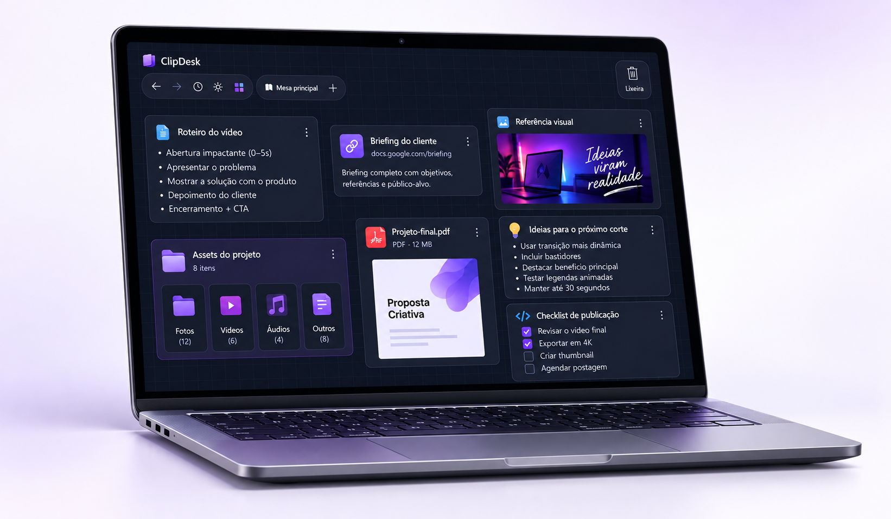

Cole ou arraste
Use Ctrl + V para adicionar o que você copiou ou arraste arquivos e pastas diretamente do Explorer.
Já copiou um link, texto ou arquivo e depois perdeu no meio das abas? O ClipDesk salva tudo em uma mesa visual para você organizar melhor suas informações e recuperar quando precisar.

O ClipDesk fica entre a área de transferência e as pastas definitivas: rápido como copiar e colar, visual como uma mesa de trabalho.
Use Ctrl + V para adicionar o que você copiou ou arraste arquivos e pastas diretamente do Explorer.
Mova cards livremente, renomeie, duplique, agrupe em pastas e crie mesas diferentes para cada trabalho.
Clique em um card para devolver o conteúdo à área de transferência e continue exatamente de onde parou.
Quando um trabalho mistura referências, trechos, links e arquivos, o ClipDesk mantém o material visível sem forçar uma organização definitiva.
Reúna referências visuais, textos, trilhas, links e arquivos de exportação durante uma produção.
Separe citações, imagens, documentos e fontes por tema antes de transformar tudo em uma entrega.
Mantenha respostas, números, anexos e links recorrentes prontos para reutilizar ao longo do dia.
Crie uma mesa para cada cliente, pauta ou contexto e troque de foco sem misturar materiais.
Os recursos foram pensados para reduzir interrupções e devolver contexto rapidamente, sem transformar a sua mesa em mais uma ferramenta complexa.
Pesquise cópias recentes no painel lateral ou abra a janela compacta pela bandeja e pelo atalho Ctrl + Shift + H.
Agrupe cards arrastando um sobre o outro e mantenha espaços independentes para diferentes projetos e rotinas.
Corrija mudanças visuais rapidamente com Ctrl + Z e Ctrl + Y.
Escolha o tema e o ClipDesk restaura sua preferência na próxima abertura.
O reconhecimento local sugere nomes para imagens e facilita encontrar cada card.
Ative a inicialização discreta e deixe o histórico acessível pela bandeja sempre que precisar.
Cards, posições, imagens e preferências continuam disponíveis localmente entre uma sessão e outra.
Estenda o ClipDesk com um plugin próprio. O Dev Kit reúne o modelo inicial, os SDKs e as instruções que você pode entregar a uma IA para desenvolver com você.
Defina o que o plugin deve fazer, quais dados usa e como deve aparecer na mesa. Conte isso ao seu assistente de IA.
Baixe e extraia o kit. Envie o arquivo README-AI.md à IA e peça que adapte o modelo Starter para a sua ideia.
Compile, teste o plugin no ClipDesk DEV e gere o pacote ZIP com o script incluído no kit. Revise as permissões antes de compartilhar.
Use mesas locais sem conta, salve uma mesa na sua nuvem pessoal ou compartilhe uma mesa com colaboradores quando quiser.
Baixe o instalador do ClipDesk e comece a usar o aplicativo no seu computador Windows.
Versão atual: v0.4.0